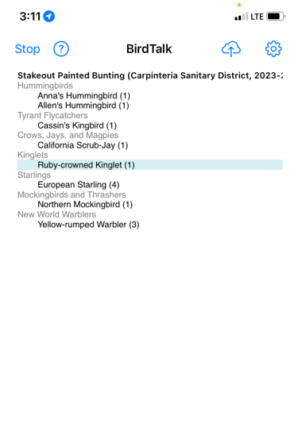

BirdTalk Command Reference
This guide provides a comprehensive list of all BirdTalk commands, organized by category. Commands are listed in order of most commonly used within each category.
Essential Commands
Starting and Stopping
- When a checklist is started, successive bird entries are stored in order.
- Multiple entries of the same species are combined when the checklist is uploaded to eBird.
- When a checklist is stopped, new bird entries are no longer appended to the checklist. Use the
insertcommands to include forgotten birds into appropriate places in an old checklist.
Commands:
- Say
Start checklist- Begins a new checklist at current location - Say
Start archival checklist- Begins a new checklist at current location, dated 31 days ago, so that it won't show up in eBird notifcations. Used for entering historical data. - Say
Stop checklist- Ends current checklist - Say
Resume- Resumes a stopped checklist, so new bird entries are again appended to the checklist. Leaves a gap of no birds for the period the checklist was stopped. - Say
Upload later- Saves current checklist for later upload to eBird. Must tap the top line orselectthe desired checklist before using. - Say
Shut down- Turns off BirdTalk listening. Same as tapping the Stop button at upper left. App remains running but doesn't hear voice commands until you tap the Start button at top left.
Basic Bird Entry
- Say
three mockingbirds- Records multiple birds of a species - Say
one robin- Records a single bird - Say
mockingbird- Records one bird (number defaults to 1)
Shorthand examples:
- Say
cal quail→ California Quail - Say
slope→ Pacific-slope Flycatcher - Say
yellow-crown→ Yellow-crowned Night-heron - See FAQ for more details.
Location Management
Hotspot Selection
- Say
Next- Switches to next nearby hotspot in menu shown right afterStart checklist - Say
Insert checklist- Creates new checklist header at current position, using the time and location of the following bird entry
Species and Count Management
Reviewing Counts
- Say
How many species- BirdTalk says back total species count for checklist - Say
How many robins- BirdTalk says back total count for that species - Say
How many species today- BirdTalk says back species count across all today's checklists - Say
Choose [species]- Select most recent entry of specified species
Adjusting Counts
- Say
No, three- Changes count of last entry (e.g., from 2 to 3) - Say
One more- Adds one to current count - Say
One fewer- Subtracts one from current count - Say
No, towhee- Changes species of last entry - Say
Make that five total- Adjusts to reach specific total
Corrections
- Say
Scratch that- Removes last entry or memo - Say
Restore- Restores last removed entry - Say
Mark that- Marks entry for review (turns red) - Say
Unmark that- Removes review mark - Say
Unmark entire checklist- Removes all review marks
Comments and Memos
Adding Comments
- Say
Memo singing from oak tree- Adds comment to selected entry - Don't pause more than a second or two after saying
Memoand before saying the comment. - Say
Memo from scratch carrying nesting material- Replaces existing memo - Say
Memo nest 10 meters north of coordinates- Includes coordinates from when bird was first entered - Say
Memo nest at current coordinates- Includes coordinates of your current position
Reading Comments
- Say
Read back- BirdTalk says back current entry's memo - Say
Read entire- BirdTalk says back all memos for current species
Editing Comments
- Say
Edit memo- Opens memo editor - Say
Scratch that- Removes last added memo text
Checklist Management
Navigation
- Say
Choose newest- Selects most recent entry - Say
Show coordinates- Displays GPS coordinates of each point, along with altitude in meters - Say
Sort by family- Groups entries by species - Say
Sort by time- Shows entries chronologically


Upload Management
- Say
Upload later- Marks current checklist for later upload - Say
Unfreeze- Marks an uploaded checklist as not uploaded (allows re-uploading if needed) - Say
Delete entire checklist- deletes the checklist whose header line is selected. - Say
Delete all checklists- remove every single checklist from BirdTalk, whether uploaded or not. This is a dangerously powerful command so be very sure that's what you intend before using it. In fact it's best not to even say this phrase near other people who are using BirdTalk, on the chance that their mic picks up your words. As a safety measure this feature requires that you first select the top line of the first checklist in your BirdTalk display.
There's nothing wrong with keeping your most recently uploaded checklists in BirdTalk for a few days, until you're completely sure the checklist made it into eBird. However, you will want to remove old checklists eventually, as BirdTalk slows down if it is holding on to more than 20 or so checklists.
Information
- Say
How far- BirdTalk says back distance traveled - Say
How long- BirdTalk says back elapsed time - Say
Time- BirdTalk says back current time
Sharing
- Say
Share with three- marks the checklist as having 3 additional authors in addition to you. - The total (4 people in this example) is used for the Party Size field in the uploaded checklist.
- Edit the checklist online, after upload, and use eBird's Share button to specify with whom you are sharing.
Device Management
- Say
MuteorIgnore- Stops listening for commands - Say
ResumeorListenorUnmute- Resumes listening
Information
System Commands
- Say
Time- BirdTalk speaks current time (also confirms it's listening) - Say
Feedback [text]- Stores feedback for later transmission (note: feedback is saved but not sent immediately) - Say
Send feedback- Packs all stored feedback into a file that it asks you to email to us
Next: For more detailed advice on voice recognition, shorthand names, and troubleshooting, see the FAQ.